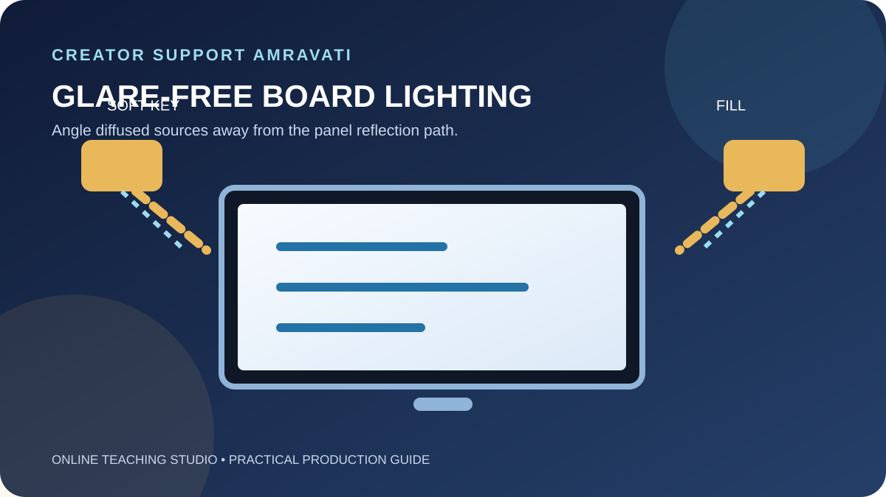
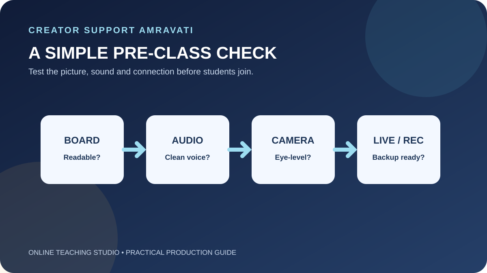

Start by deciding what the viewer must see at each moment. A mathematics class may need a wide view of the teacher and board, while a software tutorial may work better with screen capture and a small picture-in-picture view. The right setup is the simplest one that makes the lesson readable, audible and dependable on the devices students actually use.
1. Plan the teaching room around the lesson
Measure the usable width and depth of the room, note where windows and ceiling lights are located, and identify the teacher's movement area. Keep the camera, tripod and cables outside normal walking paths. Leave enough space for the educator to write, point to diagrams and step aside without blocking the camera or casting a large shadow.
- Board-led teaching: frame the educator and the active writing area together, then test whether the smallest text remains legible on a phone.
- Desk or tablet lessons: capture the screen directly where possible and use a separate camera view for the instructor.
- Hybrid classes: check that the in-room display, remote student audio and recording feed do not compete or create feedback.
Before buying equipment, make a short test recording from the intended student viewpoint. This often reveals more than a room diagram: unreadable notes, reflections, a noisy fan or an awkward camera angle become obvious immediately.
2. Control glare and reflections on smart boards or whiteboards
Interactive flat panels have glossy surfaces that can reflect windows, ceiling fixtures and video lights. A bright patch may hide a formula even when the panel looks perfectly clear to the teacher standing in the room. Treat glare as a room-positioning issue first, not simply a camera exposure problem.

Position lights and the board thoughtfully
- Place soft lights to the sides of the camera axis and angle them so their reflections do not bounce directly into the lens.
- When possible, avoid placing a bright window directly opposite the panel. Use curtains or blinds to control changing daylight.
- Move the light, camera or teacher a little at a time while watching the camera preview. A small adjustment can move a reflection away from important content.
- For a physical whiteboard, use broad diffused light rather than a small, intense source aimed straight at the board.
Set display brightness and board contrast
Choose panel brightness and contrast that preserve detail without making white areas bloom in the recording. The best setting depends on the panel, room brightness and camera exposure, so check a test clip rather than relying only on how it looks to the naked eye. Use high-contrast writing, sufficiently thick strokes and uncluttered slides. On a dark background, choose bright readable colours; on a light background, use dark text and lines.
Do not try to remove every reflection by underexposing the whole camera image. That can make the educator too dark while leaving the bright reflection visible. Correct the physical lighting and then balance exposure.
3. Capture crisp, distraction-free voice audio
Students may tolerate a simple camera image, but they quickly notice speech that is distant, echoing or interrupted by clothing noise. A wireless lavalier (clip-on) microphone or a lightweight headset can keep the voice level more consistent as the teacher moves around the board.
Place and secure the microphone
- Clip a lavalier around the upper chest area, following the microphone maker's placement guidance. Keep it clear of loose fabric, lanyards, necklaces and hair.
- For a teacher who turns frequently toward the board, a headset mic can keep the capsule at a more consistent distance from the mouth.
- Check transmitter battery, receiver connection, channel selection and any mute switch before the class.
- Wear the microphone during the test. Turning the head, raising an arm and writing on the board can all change sound or create fabric rub.
Reduce room echo and background noise
Large bare rooms with tile floors and parallel walls can create noticeable reverberation. Curtains, rugs, bookshelves and suitable acoustic treatment can reduce reflections. Place the microphone close to the speaker rather than trying to solve a distant voice with aggressive gain. Identify hums from fans, air conditioners, projectors and computers; switch off a noise source only when it is safe and comfortable to do so.
Listen through headphones to a 15–30 second test recording. Check normal speech, the loudest explanation, a board-writing moment and a short pause. Watch the recording meters for clipping and confirm that the wireless link remains stable throughout the room.
4. Set camera height, framing and basic settings
Place the camera on a stable tripod at approximately the educator's eye level for a direct-to-camera explanation. Keep it level so board edges and wall lines do not appear unintentionally tilted. If the board must occupy more of the image, move the camera farther back and adjust the framing rather than using an extreme wide lens that distorts people near the edges.
| Teaching style | Useful framing | Practical check |
|---|---|---|
| Smart board explanation | Medium-wide shot with teacher and active board zone | Keep key notes away from frame edges and test legibility on a phone. |
| Concept discussion | Medium shot, usually chest or waist up | Leave headroom and room for natural gestures. |
| Desk or software walkthrough | Screen capture with a small instructor window, or an overhead view | Make menus, labels and cursor actions readable at mobile size. |
Choose consistent camera settings
- Resolution: 1080p is a practical starting point for many classes. 4K can provide extra detail or cropping flexibility if the device, storage, editing computer and delivery platform support it.
- Frame rate: 25 or 30 fps is often suitable for ordinary lecture delivery. Choose a rate supported by the camera and consistent with the lighting and streaming workflow; higher frame rates are not automatically better for a static lesson.
- Exposure and focus: use exposure/focus lock or manual controls when available and appropriate, then test the teacher moving between the board and camera. Avoid a setting that makes the board readable but leaves the educator too dark.
- White balance: keep it consistent across lesson segments so skin tones and board colours do not shift when the camera changes its automatic estimate.
Use the rear camera of a phone when it offers the quality and controls you need, but confirm that you can monitor framing and recording status. Disable notifications, clean the lens and ensure sufficient storage before a long session.
5. Light the educator and board as separate parts of the scene

A common mistake is to make the entire room brighter without checking where the light lands. Instead, use a soft key light to illuminate the educator and, if needed, a gentle fill to reduce harsh shadows. Keep both sources angled away from the panel's reflective surface. The panel's own brightness should be balanced separately from the teacher's lighting.
Try to keep the colour of the lights reasonably consistent. Mixed daylight and warm indoor bulbs can create uneven skin tones and make the board look different from one side to the other. If daylight changes during the day, close blinds or adjust the room lights to keep the look stable across a course series.
6. Recorded lectures vs. live classes: choose a reliable workflow
Pre-recorded lessons and course modules
Recorded lessons allow retakes and editing. Prepare a short outline, divide a long topic into chapters and record in manageable sections. Leave a brief pause before and after each section to make editing easier. Keep the camera, board layout, microphone position and lighting consistent across lessons. Save original files in organised folders and keep a second copy of important footage.
Live classes and interactive sessions
Live teaching needs a different priority: reliability and communication. Test the internet connection in the actual room, close unnecessary bandwidth-heavy applications, confirm the correct microphone and camera are selected, and rehearse screen sharing. Check how students will ask questions and how the teacher will see them without losing the lesson flow.
Keep a local recording when the platform and device allow it
A local recording can provide a backup if the stream drops, but confirm that the computer has enough storage and that recording is permitted by the platform and applicable consent or institutional rules. Make a short test first to ensure the local file contains the intended audio and screen content. Do not assume that a cloud recording or backup is enabled by default.
For either workflow, create a repeatable pre-class routine: power and battery check, storage check, microphone test, camera preview, board readability check, internet check (for live sessions), and a final playback of a short sample.
7. Common mistakes and a practical setup checklist
- Writing too small: enlarge handwriting or slide text, keep lines spaced and show one key idea at a time.
- Standing in front of the content: write, then step aside and pause so learners can read the completed point.
- Ignoring mic rustle: test the actual clothing and gestures used while teaching.
- Changing the setup between lessons: mark tripod and light positions so a multi-part course looks consistent.
- Skipping playback: inspect a short clip at normal size and on a phone before recording a full module.
- Recording without a backup plan: know where files are saved and how they will be copied or uploaded after class.
Five-minute pre-recording checklist
- Clean the camera lens and confirm storage, battery and power.
- Check that board text is readable from the camera position.
- Move lights until there are no distracting reflections over important notes.
- Record a short microphone test and listen on headphones.
- Check eye-level framing, exposure, focus and white balance.
- For live sessions, test the internet, screen share and local recording option.
Frequently asked questions
Do I need a mirrorless camera to record smart board classes?
No. A smartphone on a stable tripod or a good webcam can be sufficient when the board is readable, lighting is controlled and audio is clear. A dedicated camera may help in larger rooms or when you need more control, but it is not a prerequisite for a useful lesson.
How can I make board writing easier to read on mobile phones?
Use larger writing or slide fonts, stronger contrast, generous spacing and clear margins. Avoid filling the whole board with small text. Pause on important diagrams and check a test recording on a phone before the class.
How do I prevent smart board glare on camera?
Move or angle lights away from the board's reflection path, control direct window light and inspect the camera preview from the exact shooting position. Adjust the display brightness only after the physical light placement is under control.
Is a wireless collar microphone enough for a large classroom?
It can work when the wireless system has reliable coverage and the microphone is placed correctly, but room size, walls, interference and transmitter range matter. Test the full teaching area and consider a headset or another audio arrangement if the teacher moves far from the receiver.
Should I record lessons in 1080p or 4K?
1080p is a sensible, efficient choice for many online classes. 4K can be useful when you need extra detail or reframing and have the storage, processing capacity and upload bandwidth. Choose based on the final platform and the equipment available.
Editorial note: Equipment capabilities and menu names vary by device and manufacturer. Treat the settings in this guide as practical starting points, test them in your own room and follow the equipment maker's instructions. Obtain appropriate permission before recording students or sharing classroom footage. This article is educational and does not guarantee a particular teaching, technical or commercial outcome. Read our editorial policy.
Related reading: Explore our Podcast Audio Treatment Guide, Video Podcast Studio Setup Guide, Smartphone Video Production Guide, Video & Photo Production services, Video Editing services and all CSA services.
Further reading: Google Meet video meeting help · Zoom audio and video troubleshooting.